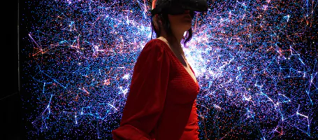
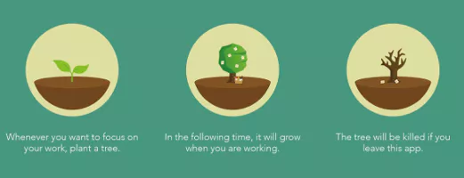
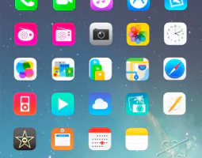
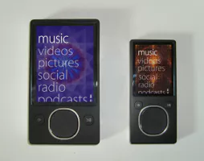
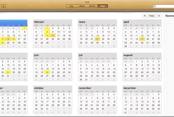
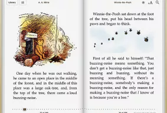
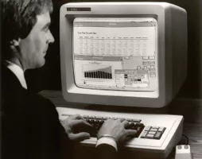
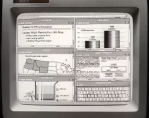
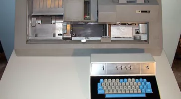

References
Digibarn: Xerox Star 8010 Interfaces, high quality polaroids (1981). (n.d.). https://digibarn.com/collections/screenshots/xerox-star-8010/
File:IBM card punch 029.JPG - Wikimedia Commons. (2007, March 21). https://commons.wikimedia.org/wiki/File:IBM_card_punch_029.JPG
Flat Design – An Introduction. (2023, August 15). The Interaction Design Foundation. https://www.interaction-design.org/literature/article/flat-design-an-introduction
Johnson, A. (2023, July 12). Material design: the revolution in UI/UX design - Bootcamp. Medium. https://bootcamp.uxdesign.cc/material-design-the-revolution-in-ui-ux-design-416a2e68a5e3
Kinney, C. (2021, December 25). Biophilic UX Design - Christopher Kinney - Medium. Medium. https://christopher-kinney5.medium.com/biophilic-ux-design-5a672f7d6e23
Kutsaiev, R. (2017, January 3). person holding smartphone. Unsplash. https://unsplash.com/photos/0VGG7cqTwCo
McKee, B. (2012). Skeuomorphic design: Apple vs. good UX? Neowin. https://www.neowin.net/news/skeuomorphic-design-apple-vs-good-ux/
What is User Interface (UI) Design? (2023). The Interaction Design Foundation. https://www.interaction-design.org/literature/topics/ui-design
Xia, V. (2021, December 11). 12 best material design website examples to draw inspirations. Medium. https://medium.com/@Vincentxia77/12-best-material-design-website-examples-to-draw-inspirations-f36c5f1a1ec
Digibarn: Xerox Star 8010 Interfaces, high quality polaroids (1981). (n.d.). https://digibarn.com/collections/screenshots/xerox-star-8010/
File:IBM card punch 029.JPG - Wikimedia Commons. (2007, March 21). https://commons.wikimedia.org/wiki/File:IBM_card_punch_029.JPG
Flat Design – An Introduction. (2023, August 15). The Interaction Design Foundation. https://www.interaction-design.org/literature/article/flat-design-an-introduction
Johnson, A. (2023, July 12). Material design: the revolution in UI/UX design - Bootcamp. Medium. https://bootcamp.uxdesign.cc/material-design-the-revolution-in-ui-ux-design-416a2e68a5e3
Kinney, C. (2021, December 25). Biophilic UX Design - Christopher Kinney - Medium. Medium. https://christopher-kinney5.medium.com/biophilic-ux-design-5a672f7d6e23
Kutsaiev, R. (2017, January 3). person holding smartphone. Unsplash. https://unsplash.com/photos/0VGG7cqTwCo
McKee, B. (2012). Skeuomorphic design: Apple vs. good UX? Neowin. https://www.neowin.net/news/skeuomorphic-design-apple-vs-good-ux/
What is User Interface (UI) Design? (2023). The Interaction Design Foundation. https://www.interaction-design.org/literature/topics/ui-design
Xia, V. (2021, December 11). 12 best material design website examples to draw inspirations. Medium. https://medium.com/@Vincentxia77/12-best-material-design-website-examples-to-draw-inspirations-f36c5f1a1ec
Through the constant interplay between technological innovation
and human-centered design, the evolution of user interfaces
continues to mirror the ever-evolving relationship between
humans and the natural world.
A Synergistic Future
It is becoming increasingly clear that technology shouldn't distance humans from the natural world, but should instead strengthen their connection to it, as evidenced by the growth of user interface design from its early utilitarian stages to its current biophilic tendencies. The design of user interfaces in the future appears set to more deeply interact with the environment as technology develops. Some possible scenarios are interfaces that respond to human emotions or virtual reality experiences that transport users to tranquil surroundings.
It is becoming increasingly clear that technology shouldn't distance humans from the natural world, but should instead strengthen their connection to it, as evidenced by the growth of user interface design from its early utilitarian stages to its current biophilic tendencies. The design of user interfaces in the future appears set to more deeply interact with the environment as technology develops. Some possible scenarios are interfaces that respond to human emotions or virtual reality experiences that transport users to tranquil surroundings.

Nature Inspired
The term "biophilic design" has gained popularity in recent years. The biologist Edward O. Wilson invented the term "biophilia," which describes people's fundamental attachment to nature. In order to build user interfaces that inspire a sense of tranquillity and community, designers have started combining elements from nature, such as organic shapes, natural textures, and flowing animations. This strategy grows from the rising understanding of the psychological advantages of connecting with nature.
The term "biophilic design" has gained popularity in recent years. The biologist Edward O. Wilson invented the term "biophilia," which describes people's fundamental attachment to nature. In order to build user interfaces that inspire a sense of tranquillity and community, designers have started combining elements from nature, such as organic shapes, natural textures, and flowing animations. This strategy grows from the rising understanding of the psychological advantages of connecting with nature.

Material Design
Google created the design language known as Material Design with the goal of improving user interaction and experience on all platforms and gadgets. It incorporates the capabilities of digital technology while drawing inspiration from real-world elements like paper and ink, utilizing subtle animations and transitions to mimic how objects move and respond to user interactions. Material UI design provides engaging, understandable, and intuitive user interfaces.
Google created the design language known as Material Design with the goal of improving user interaction and experience on all platforms and gadgets. It incorporates the capabilities of digital technology while drawing inspiration from real-world elements like paper and ink, utilizing subtle animations and transitions to mimic how objects move and respond to user interactions. Material UI design provides engaging, understandable, and intuitive user interfaces.
Flat design and minimalism
A step away from imitating the physical world was made by the rise of flat design and minimalism. These design approaches placed a strong emphasis on simplicity, clarity, and functionality. Interfaces adopted streamlined designs, vivid hues, and spacious layouts. Indirectly reflecting the peace of nature's simplicity, the trend toward minimalism represented a desire to lighten users' cognitive load and offer a more streamlined experience.
A step away from imitating the physical world was made by the rise of flat design and minimalism. These design approaches placed a strong emphasis on simplicity, clarity, and functionality. Interfaces adopted streamlined designs, vivid hues, and spacious layouts. Indirectly reflecting the peace of nature's simplicity, the trend toward minimalism represented a desire to lighten users' cognitive load and offer a more streamlined experience.


Skeuomorphic
There was developed a skeuomorphic design, on the way to provide user interfaces with even more real-world tangibility. This design mimics the textures, materials and real-world physical items. While this approach made interfaces feel more like the physical world by increasing familiarity, it still had many disadvantages, such as cluttered and confusing interfaces.
There was developed a skeuomorphic design, on the way to provide user interfaces with even more real-world tangibility. This design mimics the textures, materials and real-world physical items. While this approach made interfaces feel more like the physical world by increasing familiarity, it still had many disadvantages, such as cluttered and confusing interfaces.


Metaphoric
Designers started introducing metaphorical components into interfaces - icons of files, trash bins etc. - this helped provide users with a familiar environment and close the gap between the digital and the natural world. Although the user experience was improved, there was still little link to the surrounding world.
Designers started introducing metaphorical components into interfaces - icons of files, trash bins etc. - this helped provide users with a familiar environment and close the gap between the digital and the natural world. Although the user experience was improved, there was still little link to the surrounding world.


Disconnected
User interfaces in the early days of digital technology were cut off from the natural environment. Functionality and technological limitations took the first place, leaving aesthetics and user experience as secondary considerations. The UI consisted of text-based interfaces, monochromatic screens, and little interactive content, limiting the amount of user engagement.
User interfaces in the early days of digital technology were cut off from the natural environment. Functionality and technological limitations took the first place, leaving aesthetics and user experience as secondary considerations. The UI consisted of text-based interfaces, monochromatic screens, and little interactive content, limiting the amount of user engagement.


Designing user interfaces for software or electronic devices
is a process that places a strong emphasis on aesthetics and
style. Interfaces should be simple to use and enjoyable for
users. (“What Is User Interface (UI) Design?,” 2023). While
UI design has undergone a huge evolution over time, there is
a significant aspect which is tightly connected to people's
well-being and cognition - a synchronisation between user
interfaces and the natural environment.
Let's dive deeper into the changing UI and its connection to the natural environment in the past, the present and even the future!
Let's dive deeper into the changing UI and its connection to the natural environment in the past, the present and even the future!